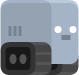
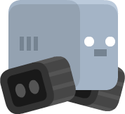
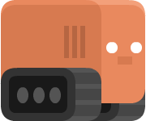

ROBOT LAB / Avanzado
30 retos para recoger, activar, repetir, decidir y rescatar. Diseña un algoritmo para cada misión.
¿Me muestras el camino?

¡Lo lograste!
RescateTu programa
0 instrucciones1. Agrega instrucciones. 2. Reordena. 3. Ejecuta y observa.
Mapa de misiones
Desbloquea cada misión completando la anterior. Puedes volver a las que ya resolviste.
Guía del laboratorio
1–5 · Secuencias con acciones: planea recogidas, rescates, apertura de puertas y activación de puentes. 6–10 · Energía: detente sobre cada batería y pulsa Recoger. 11–15 · Ingeniería: activa interruptores para encender puentes; recoge la llave y abre la puerta cuando esté justo delante.
16–20 · Bucles: agrega Repetir, coloca un patrón de varias instrucciones y ciérralo con Fin. 21–25 · Sensores: agrega decisiones «Si… entonces…». El robot comprueba la condición en ese momento. 26–30 · Rescate: combina bucles, sensores y robots perdidos; corrige los programas averiados.
Pulsa Reintentar para devolver a Bit al inicio y editar tu programa. Ganas una estrella por cumplir todos los objetivos, otra por eficiencia y otra por resolver sin fallos. El progreso se guarda solo en este navegador. El modo avanzado guarda su propio progreso sin modificar el modo inicial.
La vista docente permite explorar todas las misiones y probar soluciones sin guardar estrellas. No es una evaluación protegida ni requiere contraseña.
Créditos de las imágenes
Robots y objetos: Kenney · Robot Pack y Platformer Art Deluxe, CC0. Batería: Twemoji, gráficos © Twitter, Inc. y colaboradores, CC BY 4.0. Imágenes PNG guardadas con el juego; animaciones creadas para ROBOT LAB.